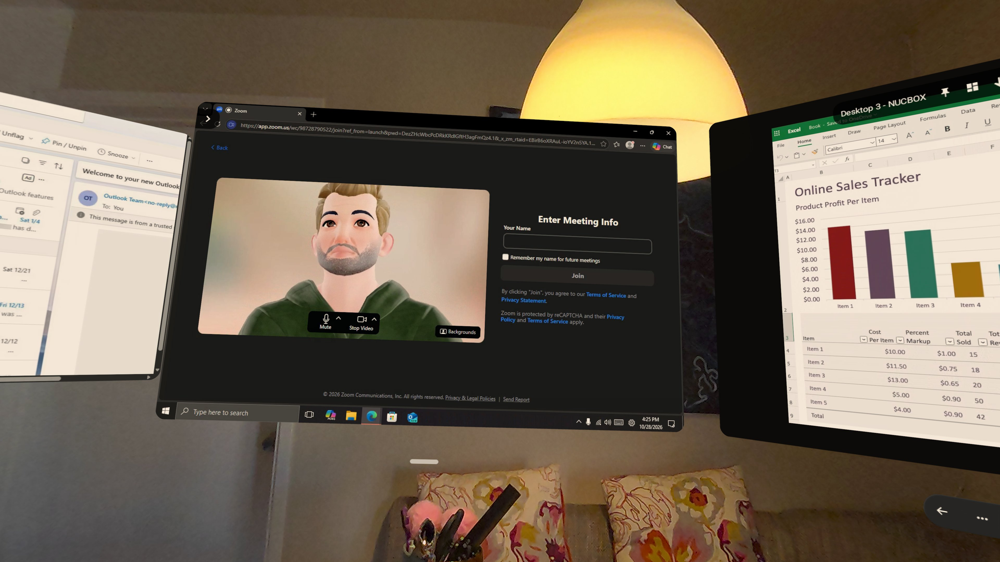
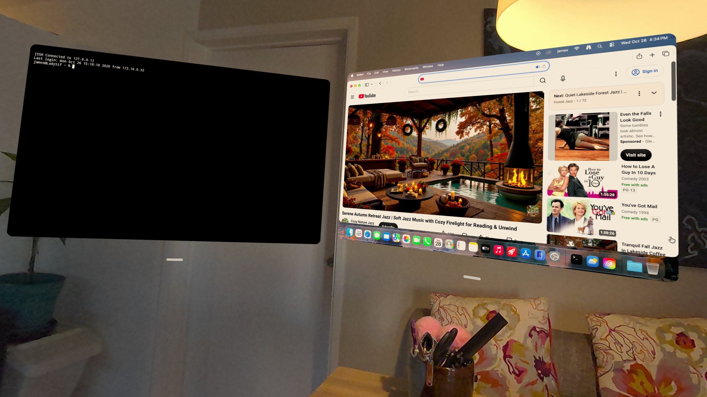

Getting started
Farside opens on your connections. Add one, tap it, and it opens as a spatial window in your room.

The launcher
Your saved connections are shown as cards. Tap a card to connect, or drag it into space to place its window. At the top right you will find:
- Add Connection — add a new RDP, SSH, or VNC connection
- Window Manager — arrange your open windows (when available)
- Files — browse files over SFTP (when you have an SSH connection with file access enabled)
- Vault — your saved sign-ins and SSH keys
- Info — About Farside, and the Vault
On a connection card you can star it to keep it first, reorder it, or open More options to edit or delete it.
Adding a connection
Adding a connection takes four steps. Back and Continue move between them, and Save connection finishes.
1. What are you connecting to?
- RDP — Windows Remote Desktop
- SSH — Secure shell & terminal
- VNC — VNC servers & Mac Screen Sharing
For VNC, first choose how the server asks you to sign in: a short VNC password set on the server, or a full user account on the machine. For Mac Screen Sharing, use the macOS user account.
2. Which computer?
Enter a connection name (it defaults to the host if left blank), the host or server, and the port. RDP and VNC can also find local PCs and devices on your network — tap a discovered device to fill these in. For SSH, type the host yourself.
3. Sign in
Choose a saved sign-in from the Vault, or a sign-in for this connection only.
- RDP and VNC (user account): username and password
- VNC (VNC password): password only, no username
- SSH: password or SSH key — sign-in is optional, so you can leave these empty and enter them when connecting
4. Review & options
Check the summary, then set the options for your connection type:
- RDP — Display & audio: play sound, redirect microphone, camera, clipboard, and storage, connect to console, admin mode
- SSH — SSH options: jump host, SFTP file access, port forwards, auto-copy selection to clipboard
- VNC — General, Files, and Companion remote login: clipboard redirection, pairing with an SSH connection for files, SSH media relay, and using SSH for the full Mac connection
- Network (all types): Direct, Cloudflare, SOCKS5, or HTTP, plus Reconnect Automatically

Connection types at a glance
- RDP — a Windows desktop, with sound, microphone, camera, clipboard, and storage redirection.
- SSH — a terminal, with jump hosts, port forwards, and SFTP file access.
- VNC — a VNC desktop, or a Mac via Screen Sharing. Pair it with an SSH connection to browse files inside the VNC window, or route the whole Mac connection through SSH.
- Cloudflare tunnel — instead of a direct connection, route through Cloudflare Access. Browser sign-in opens when needed, and tokens stay in private app storage.
Jump hosts chain SSH connections together, up to three hops, and a preview of the chain is shown when you review the connection.